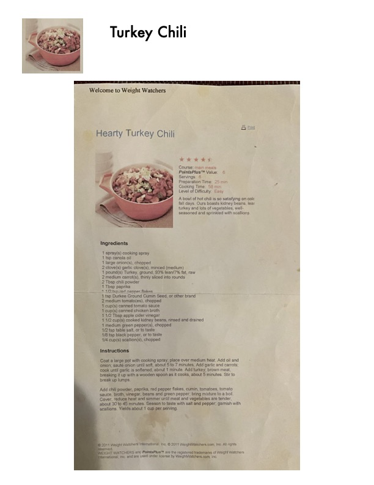

Hearty Turkey Chili

Original cookbook page 697
Ingredients
- 1 spray(s) cooking spray
- 1 tsp canola oil
- 2 tbsp onion, chopped
- 2 clove(s) garlic, minced (medium)
- 2 lb(s) Turkey, ground, 93% lean 7% fat raw
- 2 tbsp chili powder
- 1 tsp cumin
- 1/2 tsp black pepper
- 1 can (15 oz) kidney beans, rinsed or other brand
- 2 medium tomato(es), chopped
- 1 can(s) canned tomato sauce
- 1 tbsp Worcestershire sauce
- 1/2 tsp hot pepper, or to taste
- 1/4 tsp(s) salt/sodium, chopped
Instructions
- Heat a large pot with cooking spray, place over medium heat. Add oil and cook onion and garlic for about 5-7 minutes. Add garlic and cumin, cook until garlic is softened, about 1 minute. Add turkey, brown meat, breaking it up with a wooden spoon as it cooks, about 8-10 minutes. Stir in.
- Add chili powder, paprika, red pepper flakes, onion, tomatoes, tomato sauce, vinegar, beans and green pepper. Bring mixture to a boil, reduce heat and simmer for 1 hour. Taste and adjust seasonings and worcestershire sauce to taste and pepper; garnish with cilantro. Yields about 1 cup per serving.
Recipe #697 from collection